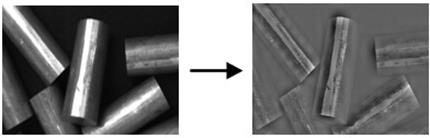

|
类型 |
图像增强 |
|
描述 |
对光照不均的图像进行光照补偿，其主要思路为： 1.求取原图I的平均灰度； 2.把原图分为N*M个块，求出每块的平均值，得到子块的亮度矩阵D； 3.用矩阵D的每个元素减源图的平均灰度，得到子块的亮度差值矩阵E； 4.将矩阵E差值变成与源图一样大小的亮度分布矩阵R； 5.得到矫正后的图像result = I - R。
别名：ZV_LightCompensate |
|
语法 |
ZV_ImpLightCompensation(src,dst,blockSize)
参数： src：ZVOBJECT类型，源图像，单通道图像 dst：ZVOBJECT类型，光照补偿后的图像 blockSize：对图像分块处理的尺寸，正数，尺寸越小光照补偿越明显但图像信息丢失的则越明显，建议使用32 |
|
适用控制器 |
支持ZV功能或者5系列以上的控制器 |
|
例子 |
 ZVOBJECT src,dst ZV_ImgRead(src,"enha4.png",0) '以原图像格式读取图片 ZV_ImpLightCompensation(src,dst,32) '对图像进行光照补偿 |